Hi! im,
Lucas Salinas
I'm a programmer and game developer based in Orlando, Florida.
I am currently studying computer science at the University of Central Florida.
I make games, music, art and random projects in my free time.
I am currently studying computer science at the University of Central Florida.
I make games, music, art and random projects in my free time.
Chromacrophobia

This game was the final project of a class called AI for Game Programming, and was made in a group of 4 people.
The game includes 5 unique levels, and 7 different enemies and several different weapons and items to choose from.


For example, the bat enemy could quickly flap upwards and downwards, but had a harder time getting to the player if they were horizontal to it.
Every enemy has some specific counter, that makes killing them easy, which the player can plan for in advance.
Every enemy has some specific counter, that makes killing them easy, which the player can plan for in advance.